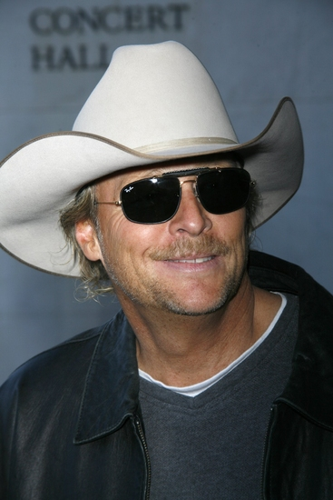
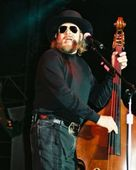
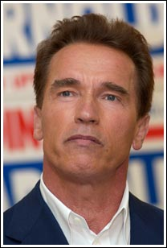
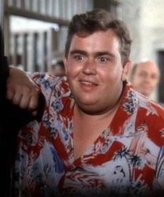
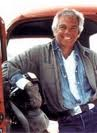

"The Jeep is Americas only real sports car!" - Enzo Ferrari

The history behind the legendary Jeep Grand Wagoneer
Engine
- Type...360 c.i.d. V-8
- Bore & Stroke(in)...4.08x3.44
- Hp @ rpm...144 @ 3,200
- Torque (lb.-ft.)...280 @ 1,500
- Compression ratio/fuel...8.25:1/unleaded
Drive Train
- Transmission...,3 speed automatic
- Transfer case...Selec-trac
- Ratios...2.61:1/1.00:1
- Axle Ratio...3.31:1
Performance
- 0-60(sec)...12.75
- 30-60(sec)...9.25
- Fuel consumption: city/freeway(mpg)...12.98 steady 60mph(mpg)...14.52
- Range, freeway driving(miles)...295
General
- Curb Weight(lbs)...4,505
- GVWR(lbs)...6,200
- Brakes...power front discs; rear drums
- Fuel tank capacity(gal)...20.3
- Overall length(in)...186.4
- Ground Clearance @ differentials(in)...7.2
The Jeep Grand Wagoneer was the first luxury 4x4, sold and produced through numerous variations from 1963 to 1991. A "sport utility vehicle" (SUV) for decades before the term was even coined, the 4WD Wagoneer saw only minor mechanial changes during its 28-year plus production run, the third longest in US automotive history. The Grand Wagoneer pioneered the sport utiliy vehicle marketplace, the most car-like 4x4 in spite of its massive boxy shape. Compared with offerings from International Harvester and Land Rover — which were producing utilitarian work-oriented vehicles with spartan truck-like interiors — the Wagoneer's luxury set it apart. Based on the Jeep SJ platform, the revolutionary Wagoneer sported an advanced overhead cam inline 6 cylinder, and offered features unheard of in any other 4WD vehicle made it at the time such as power steering and automatic transmission. The Grand Wagoneer made its debut seven years before Land Rover launched its Range Rover in Great Britain, and 24 years before that upscale marque appeared in the United States. It was succeeded by the Jeep Grand Cherokee. The Grand Wagoneer is not a rock crawling, mud bogging, quasi-military rig for the hard-core. Neither is it as sporty SUV for the kid crowd. Rather, it is a super-cushmobile with four-wheel drive, ideal for a family that wants to spend time in the marginal outback and that can afford to do it at the height of luxury (at its time). Although it is capable of traveling the rugged trails, it wasn't particularly designed with that in mind. It sits low to the ground, will drag its tail without even trying, and doesn't pretend to inspire high-adventure driving. This is the grand lady of luxury, and she has been around long enough in her prsent form to cause heads to turn. But despite the need for futher refinement, age has matured and mellowed the full-size Wagoneer, and it has found a comfortable niche in the hearts of American four wheelers. The Grand Wagoneer enjoyed one of the longest production runs of any vehicle. The powerful V8 engine and high towing capacity made the Grand Wagoneer popular among its many repeat buyers, and as of 1991, it was the longest domestically produced vehicle (29 years) on the same platform. The 1987-1991 models years "are considered the best of the breed and still have a loyal following among a select group". A total of 1,560 SJ Grand Wagoneers were produced in the 1991 model year. Owners had the option of having a "Final Edition Jeep Grand Wagoneer" badge on the dashboard. The last Grand Wagoneer produced rolled out of Chrysler's Toledo Assembly Plant on June 21, 1991.
Celebrities who own/owned a Grand Wagoneer
- Alan Jackson
- Hank Williams Jr.
- ArnoldSchwartzenegger
- John Candy
- Ralph Lauren